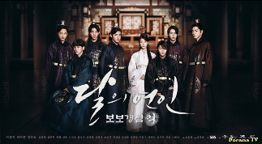
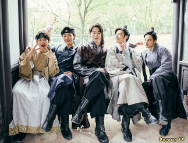

Дорамы - это сериалы, которые имеют множество различных жанров, сюжетов, героев и локаций. Корейский
кинематограф
отличается от американских или европейских. Здесь редко можно увидеть настоящую жестокость, герои
романтичные,
находчивые и яркие, а любовь - особенная, не поддающаяся описанию, иногда крайне драматичная, иногда -
приторно-сладкая,
а иногда и всё сразу...
Тут на корейскую действительность смотришь словно через розовые очки: персонажи часто возвышенные, они
становятся
идеалом, вступаются за нуждающихся, остаются храбрыми даже в самых страшных ситуациях, не отступают перед
трудностями и
добиваются своих целей, даже если от них отвернулся весь мир. Главный герой корейских сериалов зачастую
идеален не
только снаружи, но и внутри. Однако эта идеализация придаёт свою изюминку, да и в принципе отражает взгляды
корейцев на
жизнь. Конечно, действительность, показанная в сериалах, неминуемо отличается от настоящей, но в то же время
дает
возможность хотя бы немного узнать о кухне, моде, традициях, мировоззрении и, в конце концов, истории Кореи.

История Кореи часто вдохновляет режиссёров и сценаристов. Именно поэтому Южная Корея славится своими
историческими
дорамами, в которых показаны быт и нравы в эпоху императоров. Огромные деньги студии тратят на ханбоки
(корейские
традиционные костюмы), реквизит и прочие значимые мелочи. Несмотря на то, что зачастую истории, рассказанные
в сериалах,
от начала и до конца являются выдумкой сценариста, создатели стремятся к достоверности во всем: начиная от
декораций
старинных дворцов государства Корё (где проходят съемки исторических сериалов), заканчивая манерой
персонажей держаться
и говорить.
Корейские режиссёры не стремятся к исторической точности, отдавая предпочтение собственной трактовке событий.
В дораме
обязательно будет борьба за власть, красивая любовь, королевские интриги, комические и драматические моменты
и отличные
актеры.
Двумя самыми популярными темами в исторических сериалах стали «гендерная интрига» и «попаданчество». Сюжет,
закрученный
вокруг гендерной интриги связан с ролью женщины в корейском обществе. Обычно в сериалах простая, но
смышленая девушка,
переодевшись мужчиной, получает возможность устроиться на престижную работу, сдавать государственные
экзамены и
пользоваться всеми привилегиями мужчин, которые были недоступны женщине в те времена. Так, девушка не только
добивается
успеха в жизни, но и привлекает к себе внимание главных героев, которые непременно начнут сражаться за её
сердце. И всё
это подано в комедийном ключе с примесью красивой романтической истории.
«Попаданчество» - еще одна любимая тема дорам, в них герой или героиня путешествуют по времени и попадают
(отсюда и
название) из современного мира в эпоху императоров и императриц, что само по себе становится отправной
точкой сюжета.
Одной из самых известных дорам с подобным сюжетом является сериал «Лунные влюблённые», покоривший не только
корейцев, но
и весь остальной мир.

Жанровая направленность дорам совершенно различна, каждый сможет найти сериал по душе: романтика, боевик,
детектив,
триллер, исторический, мелодрама, драма...
Мир дорам сильно отличается от типичных сериалов американского производства. Сначала он может быть непонятен
и странен,
однако с каждым эпизодом эта вселенная всё больше затягивает и показывает зрителю другую реальность, новые
лица,
красивых героев, необычную культуру. Особенную популярность приобрел ставший культовым сериал «Зимняя
соната», после
выхода которого весь азиатский мир влюбился в корейскую культуру.
Экспорт дорам стал жизненно необходим экономике Южной Кореи, именно поэтому правительство не скупится и
выделяет
баснословные деньги в помощь кинопроизводству. И это приносит свои плоды: во-первых, весь мир (и Россия в
том числе)
скупает права на показ сериалов. Во-вторых, дорамы с их необыкновенной, и даже сказочной атмосферой
привлекают в Корею
толпы туристов, желающих окунуться в свою собственную историю. И, наконец, корейская культура начала
становиться частью
действительности каждого, так незаметно она вошла в нашу повседневность и крепко тут обосновалась.